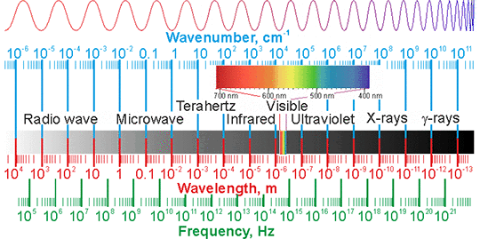
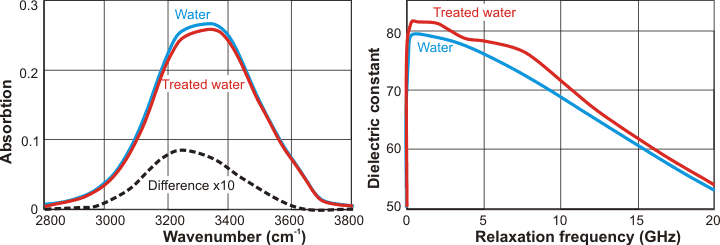

Electromagnetic waves
Protons and electrons move between water molecules giving coherent regions interacting with electric and magnetic fields.
 Electric effects on water
Electric effects on water
 Magnetic effects on water
Magnetic effects on water
 Electromagnetic effects on water
Electromagnetic effects on water
 Other related effects
Other related effects
Due to the partial covalency of water's hydrogen bonding, electrons are not held by individual molecules but are easily distributed amongst water clusters giving rise to coherent regions [1691] capable of interacting with local electric [1692] and magnetic fields and electromagnetic radiation [1602].
Water, being dipolar, can be partially aligned by an electric field, and this may be easily shown by the movement of a stream of water by an electrostatic source [163]. Very high field strengths (>2.5 ˣ 109 V ˣ m−1) cause water dissociation in liquid water and hexagonal ice with slightly higher field strengths (>3.6 ˣ 109 V ˣ m−1), causing continued proton flow in ice [2131]. Strong electric fields have complex effects on ice formation and dissociation. In molecular dynamics simulations, electric fields between 0.45 V ˣ m−1 and 3 ˣ 109 V ˣ m−1 accelerate the freezing of water into cubic ice by affecting the arrangement of neighbors in the second coordination shell of a water molecule [3340]. However, higher field strengths (5 ˣ 109 V ˣ m−1) reorient water in ice such that freezing is inhibited [251], with lower fields (105 V ˣ m−1) encouraging ice formation in supercooled water [1327] by weakening the hydrogen-bonding. Even partial alignment of the water molecules with the electric field will cause pre-existing hydrogen bonding to bend or break. The balance between hydrogen bonding and van der Waals dispersion attractions is thus biased towards van der Waals attractions giving rise to less cyclic hydrogen-bonded clustering. An electric field also changes the molecular O-H bond lengths (25 ˣ 109 V ˣ m−1 causing ≈ ±6% change in a lone water molecule), H-O-H bond angle (25 ˣ 109 V ˣ m−1 causing ≈ +1%/-0.2% change in a lone water molecule), vibrational frequencies and dissociation energy, depending on the relative orientation of the molecule to the field [1727]. This will affect the hydrogen-bonded network in an anisotropic manner.
Effect of electric field on viscosity, from [2806]
High interfacial fields (E > 109 V ˣ m−1, > thermal energy) at electrode (or charged) surfaces can cause a phase transition with an ordered layering of water at high densities similar to ice X [420]. Depending on the field's value, the restriction pressures may cause melting or freezing as corresponding to the normal phase behavior [873]. High fields (E ≈ V ˣ nm−1) might also be found (perhaps surprisingly) at the surface of hydrophilic molecules, where they are caused by the partial charges on the atoms and the small distances between the surface and first hydration layer. High fields affect hydrogen bonding in an anisotropic manner, hydrogen bonds being strengthened along the field but weakened orthogonal to the field [582]. Such fields have shown this anisotropic effect (under molecular modeling) on the dynamic viscosity of water (see right, c ].). At low fields, however, both translational and rotational motions may be reduced. Electric fields are expected to increase the differences in the properties between the ortho and para forms of water [1186]. Electric fields also lower the dielectric constant of the water [616] due to the resultant partial or complete destruction of the hydrogen-bonded network.
Pure water is a poor conductor of electricity but is not a perfect insulator as it always contains ions due to self-dissociation. Passage of an electric current causes electrolysis, f producing O2 at the anode and H2 at the cathode [1436], with the resulting water storing the concentration changes for extensive periods (hours) [1550]. i At metallic electrodes, even relatively low voltages can have impressive effects on the orientation of the water molecules and the positioning of ions [375]. c A negative potential of -0.23 V orients water hydrogen atoms towards the electrode, whereas +0.52 V reverses this, with both causing some hydrogen bond breakage and localized density increase. d Ions are attracted or repelled dependent on their charge. Similar orientations may take place at the surface of minerals containing alternating positive and negative charges such that a solid (static and non-exchangeable) water layer has been reported at the surface of highly polar metal oxides, (for example, TiO2). Also, an ambient temperature single layer ice (with all the donor hydrogen bonds oriented towards each other or the silica surface oxygen atoms) is found, using modeling, on the surface of hydrophilic fully hydroxylated silica ([701], called ice tessellation), which may explain the many layers of structured water found on the surfaces of complex silicates. Thus, a high-voltage electric field (333 kV ˣ m−1) has been shown to raise the water activity in bread dough, ensuring more efficient hydration of the gluten [331]. Somewhat unexpectedly, such electric fields (≈ 1 MV m−1) increase water's surface tension by about 2% [680]. e
The effect of alternating (AC, 100 GHz to 1000 GHz) electric field on static and dynamic properties of water has been investigated [3826]. It has been reported that passing low-frequency alternating electric current (4 - 20 Hz) through distilled, deionized water using platinum electrodes causes the water to cool [3410]; a result that has to be substantiated. The rationale for this behavior is ascribed to a decrease in water entropy due to an increase in low-density water.
The floating water bridge is a stable, nearly cylindrical tube of water of 1-2 mm diameter extending up to 25 mm between two beakers of pure water under the influence of a large (15-25 kV) applied electric potential difference (Explanation) [1361, 2661]. In work following-on from this water-bridge discovery, non-equilibrium thermodynamics and collective vibrational modes of liquid water were investigated in an inhomogeneous electric field (∇2 Ea ≈ 1010 V ˣ m2) using a high voltage (20 kV) point-plane electrode system [3703a]. Hindered rotational freedom due to the electric field pinning the molecular dipoles is shown to retard the heat flow and generate a chemical potential gradient, causing changes in the refractive index. Raman spectroscopy allows observation of a phase transition over a macroscopic length scale throughout the entire volume of liquid and the coherent control of states in the liquid matter [3703b, 3704].
Water pentamer wire
Electric fields (~109 V ˣ m−1), form one-dimensional water nanowires along the electric field in water vapor. These consist of square or pentagonal prism-like structures [3724].
[Back to Top  ]
]
Liquid water is affected by magnetic fields [1522, 1597, 3229, 3267], and such fields can assist its purification [1651]. Water is diamagnetic and may be levitated in very high magnetic fields (10 T), compared with Earth's magnetic field of 50 μT [170]. Lower but still powerful magnetic fields (0.2 T) have been shown, in simulations, to increase the number of monomer water molecules [192] but, rather surprisingly, they increase the tetrahedrality at the same time. Other studies show that an increase in cluster size in liquid water is caused by a magnetic field [1597]. In contrast, the friction coefficient of water in thin films has been shown to reduce in a magnetic field (0.16-0.53 T), indicating a possible reduction in hydrogen bond strength [2012].
The air-water surface is macroscopically deformed by a magnetic field (the "Moses Effect") [3590]. Magnetic fields of ~0.5 T, or more, cause dips in the surface with depths of 10 -104 µm. Such processing is reported to help descale metal surfaces, improve cement hydration, change the ζ potential of colloids, accelerate the growth of plants irrigated with such water, enhance calcium efflux through biomembranes and influence the structure of model liposomes [110]. The effect has a 'memory' effect of minutes to hours after the treatment; orders of magnitude longer than expected from water's normal relaxation processes (ps - ns). This is thought due to the formation of reactive oxygen species during treatment.
Salt mobility is enhanced in strong magnetic fields (1-10 T), causing some disruption to the hydrogen bonding [1431]. However, this only causes a net reduction in hydrogen-bonding at high salt concentrations (for example, 5 M NaCl), whereas at lower concentrations (1 M NaCl), the increase in water hydrogen-bonding in the presence of such high magnetic fields more than compensates for this effect [1431]. They may also assist clathrate formation [485]. The increased refractive index with the magnetic field has been attributed to increased hydrogen bond strength [647]. Weak magnetic fields (15 mT) [1278] and stronger perpendicular magnetic fields (75 mT) [2939] have also been shown to increase the evaporation rate. These effects are consistent with the magnetic fields weakening the van der Waals bonding between the water molecules a and the water molecules being more tightly bound, due to the magnetic field reducing the thermal motion of the inherent charges by generating dampening forces [703]. Due to the fine balance between the conflicting hydrogen-bonding and non-bonded interactions in water clusters, any such weakening of the van der Waals attraction further strengthens the hydrogen bonding and greater cyclic hydrogen-bonded clustering. This effect of the magnetic field on the hydrogen-bonding has been further supported by (a) the increased ease of supercooling (5 mT lowering by about 1 °C, [1908]), (b) the rise in the melting point of H2O (5.6 mK at 6 T) and D2O (21.8 mK at 6 T) [703] and (c) the 3 °C lowering of the sol-gel transition (at 0.3 T) in methylcellulose [1203]. These indicate a weakening of the van der Waals bonding of the water molecules within a magnetic field. More significant effects on the contact angle and Raman bands have been shown to occur using strong magnetic fields (6 T) when the water contains dissolved oxygen (but not without the paramagnetic oxygen), indicating effects due to greater clathrate-type water formation [970].
The magnetic susceptibility of water increases from negative towards positive with magnetic frequency. It is reported to be positive (i.e., it is slightly paramagnetic) in the range of 0.4-1 MHz [1761] for ambient water.
Static magnetic effects have
been shown to cause strengthened hydrogen bonding [1693] and an increase in the ordered structure of
water formed around hydrophobic molecules and colloids [106],
as shown by the increase in fluorescence of dissolved probes
[108]. Also, magnetic fields affect the infrared spectrum of water (showing its effect on water clustering), and these effects remain for a considerable time after the magnetic field is removed [1697]. Treatment of water with magnetic fields may exert beneficial or detrimental effects on feeding to animals, depending on the strength of the field
[4369]. Surprisingly, even tiny magnetic fields may affect the solubility of gases in seawater (solubility increasing with the magnetic field (20-50 µT) [1492], probably by their effect on the clathrate stability. This reinforces
the view that it is the movement through a magnetic field
and its associated electromagnetic effect that is important
for disrupting the hydrogen bonding. Such fields can also
increase the evaporation rate of water, the dissolution
rate of oxygen (due to its paramagnetic nature), and how the ultraviolet absorbance and the surface tension of the water may be affected [4209]. However, despite claims by certain expensive
water preparations, they cannot increase the equilibrium amount of oxygen dissolved
in water above its established, and rather low, equilibrium
concentration [176].
Magnetic fields can also increase proton spin relaxation [623],
which may speed up some reactions dependent on proton transfer. Treatment of water with magnetic fields of about one Tesla
increases the strength of mortar due to its greater hydration
[426]. Treatment with constant transverse magnetic or electric fields is reported to give a disinfection effect
[2069]. [Back to Top  ]
]
The electromagnetic spectrum

From the above, it appears that electric and magnetic fields have opposite effects on water clustering. Unstructured water with fewer hydrogen bonds is a more reactive environment [286], as exemplified by the enhanced reactivity of supercritical water. b An open, more hydrogen-bonded network structure slows reactions due to its increased viscosity, reduced diffusivities, and the less active participation of water molecules. Any factors that reduce hydrogen bonding and hydrogen bond strength, such as electric fields, should encourage reactivity. Water clusters (even with random arrangements) have equal hydrogen bonding in all directions. As such, electric or electromagnetic fields that attempt to reorient the water molecules should necessitate the breakage of some hydrogen bonds; for example, electric fields have been reported to halve the mean water cluster size as measured by 17O-NMR [111] (see also 'declustered' water) and increase reaction rates [1336], hydration and solubility. Electromagnetic radiation (for example, microwave) has been shown to exert its effect primarily through the electrical rather than magnetic effect [455]. The increased hydration ability of water in electromagnetic fields has been shown by the dissociation of an enzyme dimer (electric eel acetylcholinesterase), leading to gel formation due to the microwave radiation from a mobile phone [714]. The resultant aqueous restructuring caused by such processes may be kinetically stable.
The solubility properties of the water will change in the presence of such fields and may result in the concentration of dissolved gases and hydrophobic molecules at surfaces followed by reaction (for example, due to reactive singlet oxygen (1O2) or free radical formation such as OH·) or phase changes (for example, the formation of flattish surface nanocavities, termed nanobubbles [506]). It is also possible that these processes may result in the production of low concentrations of hydrogen peroxide isimilarly to mechanical vibrations [1066, see equations]. Such changes can result in effects lasting for a considerable time, giving rise to claims for 'memory' effects. One of the curious facts concerning reports of the effects of magnets and electromagnetic radiation on the properties of water is the long lifetime these effects seem to have (for example, [757]). However, this should not be so surprising as it can take several days for the effects, of the addition of salts to water, to finally stop oscillating [4] and several months where such solutions are still changing [1148]. Also, there is evidence that water structuring in undisturbed deaerated pure water increases over a day or two [509], changes in dilute ethanol solution occur over days [1102], and changes in homeopathic preparations occur over hundreds of days [1039]. a Also, clathrates may persist metastably in water [485], water restructuring after infrared radiation may persist for more than a day [730], and water photoluminescence (possibly due to impurities at gas/liquid interfaces [800b]) may change over days [801].
In addition to the breakage of hydrogen bonds, electromagnetic fields may perturb in the gas/liquid interface and produce reactive oxygen species [110]. Changes in hydrogen bonding may affect carbon dioxide hydration resulting in pH changes. Thus the role of dissolved gas in water chemistry is likely to be more critical than commonly realized [459]; particularly as the formation of nanobubbles (that is, nanocavities) [506, 1129, 1172] containing just a few hundred or less molecules of gas, the stability of larger bubbles (≈ 300 nm diameter) detected by light scattering [800a] and nanobubble coating of hydrophobic surfaces [803] have all been described. Reinforcement of this view comes from the effect of magnetized water on ceramic manufacture [601] and out-gassing experiments that result in the loss of magnetic and electromagnetic effects [110, 800a] or photoluminescent effects [800b]. Gas accumulating at hydrophobic surfaces [459b] promotes the hydrophobic effect and low-density water formation. The accumulated gas molecules at such hydrophobic surfaces become supersaturating when electromagnetic effects disrupt this surface low-density water. An interesting (and possibly related) 'memory of water' phenomenon is the effect of water, previously exposed to weak electromagnetic signals, on the distinctive patterns and handedness of colonies of certain bacteria [971]. Here, the water retains the effect for at least 20 minutes after exposure to the field. It has been proposed that extremely weak (40 nT) alternating magnetic fields combined with a weak (40 μT) static magnetic fields affect living systems by shifting molecules between coherent (clusters involving stronger hydrogen bonds, e.g., ES) and incoherent (clusters involving weaker hydrogen bonds, e.g., CS) domains [2231].
Extremely low-frequency electromagnetic fields (ELF-EMF) have significant and lasting effects on liquid water. Using a weak field, adjusted to give a magnetic field of 45 µT, on glutamic acid solutions causes changes in the pH shifting towards the de-protonated species [1896]. Using just water, FTIR-ATR spectroscopy (see below left) showed that the lower energy part of the stretching absorption band (≈ 3250 cm−1), which is related to the coherent fully-hydrogen-bonded population, decreases [1896]. Stronger ELF-EMF fields (≈ 0.15 T) were applied to water, and its relative permittivity (dielectric constant) was measured and compared with that of untreated water (see below right). It was found that the relative permittivity (dielectric constant) of the ELF-EMF field-treated water was 3.7% higher than the control over the frequency range of 1-10 GHz, which may indicate a higher molecular polarization in the treated water [1897].
Effect of ELF-EMF on liquid water, from[1896] and [1897]

If electromagnetic effects do indeed influence
the degree of structuring in water [1323], then it is clear that
they may have an impact on health. The biological effects
of microwaves, for example, have generally been analyzed in
terms of their very small heating effects. However, it should
be recognized that there might be significant non-thermal
effects (for example, [714])
due to the imposed re-orientation of water at the surfaces
of biomolecular structures such as membranes [356].
Similar effects on membranes have been proposed to occur due
to magnetic [657] and electric fields [1086].
Additionally, as low-frequency, low-level alternating electric
fields have been found to affect the electrical conductivity
of pure water [358],
the effects of living near power cables and microwave towers
should, perhaps, not be thought harmless just because no theory
for harm has been formally recognized. Even variations in
the geomagnetic field may have some long-term exposure effects. [Back to Top  ]
]
There has been some debate over 'digital biology'; a proposal from Jacques Benveniste (leader of the team that produced the controversial homeopathy paper) that 'specific molecular signals in the audio range' (hypothetically the 'beat' frequencies of water's infrared vibrations) may be heard, collected, transmitted (for example, by phone) and amplified to similarly affect other water molecules at a receiver [134, 1211]. This far-fetched idea is generally thought highly implausible. However, the data has reportedly been independently confirmed, but this has not yet been published (which may be somewhat problematic in the present skeptical climate). Note that experimental confirmation of the phenomenon may not necessarily confirm the proposed mechanism. Rather interestingly, electromagnetic emission has been detected during the freezing of supercooled water [297] due to negative charging of the solid surface at the interface caused by surface dissociation of water molecules followed by preferential loss of hydrogen ions [462]; a consequence, perhaps, of the Costa Ribeiro effect [551]. Therefore, it is not unreasonable that similar effects may occur during changes in the structuring of liquid water. Also, it has been reported that microwave frequencies can also give rise to signals audible to radar operators [356]. Possible confirmation of the important effects of electromagnetic fields may be found in a paper from Nobel prize-winning Luc Montagnier, who declared that quite dilute solutions (of DNA) show entirely different properties from the less diluted solutions, that seem to depend on interactions with the ambient electromagnetic field [1602]. Importantly, this research, also appears to show that such effects can be transmitted through space from one container to another. h
Belief in whether or not magnetic or electromagnetic fields can
have any more permanent effect on water, and solutions, depends
on the presence of a working hypothesis for their mode of action
(see also homeopathy). Such hypotheses
are emerging. On a cautionary note, however, many studies do not treat results with proper statistical rigor or do not use
relevant 'untreated' material for comparison.
Permanent changes to the structure of water are reported following
exposure to resonant RLC (resistance inductance capacitance)
circuits [927].
The effects, however, are minor and poorly reproducible and,
as with some of the other studies mentioned here, should be
viewed with the possibility that pathological
science is at work. [Back to Top  ]
]
a This effect has been shown in weakly bound van der Waals complexes due to the coupling between magnetic-field-induced energy levels (Zeeman levels) of the molecular orbitals [659]. [Back]
b Note that this may not extend to conditions of much-reduced hydrogen bonding. At close to critical and supercritical conditions, water molecules may become less reactive than expected with temperature increase due to the loss of hydrogen-bonding causing consequential loss of the 'cage' effect, which encourages reactions within the 'cage', and reduced polarization activation. [Back]
c Note that the electric field strength across the surface monolayer of water molecules may be of the order of 1010 V m−1 for just a few volts applied potential. [Back]
d The binding of water molecules to uncharged metal surfaces depends on the nature of the metal. On a platinum Pt(111) surface, half the water molecules form Pt····OH2 links with the other half forming Pt····H-OH bonds due to the balance between Pt····H hydrogen bond formation and H-O bond weakening. Other metal surfaces may prefer one or the other water orientation or cause partial dissociation of the protons dependent on their proton affinity [523]. [Back]
e There is some dispute over the effects of electric and magnetic fields on surface tension. Electric and magnetic fields have been reported to lower the surface tensions of natural water by up to 8% [735]. However, it has been noted elsewhere that surface tension measurements are too sensitive to impurities to provide reliable data [979]. High magnetic fields (10 T) have been reported as increasing the surface tension of water by almost 2% (3.3% for D2O), with this being possibly due to the stabilization of the hydrogen bonds or the dampening of surface waves [1471]. Other studies indicate either a lowering of surface tension within a magnetic field [1597] or a raising of the surface tension with the magnetic field [2054], so no definitive conclusions may be drawn at present, although the balance of probability is that the surface tension increases with the magnetic field. The effect of microwave irradiation on the surface tension of water also shows unique properties with the water surface tension lowered and remaining well below its original value for an extended period (minutes after the return of the temperature) [2208][Back]
f Using very high voltages with high power (≈ 100 kV, >1000 A), an electric discharge through the water may result in giving a plasma channel (>10,000 K) with a broad emission spectrum from vacuum ultraviolet to infrared [1076]. Such a system produces significant quantities of O(aq) hydrated atoms [3263], OH· radicals, singlet oxygen (1O2), peroxide (H2O2), and ozone (O3). [Back]
g The methodology used in this paper has been criticized [1583]. [Back]
h The extraordinary results given in this paper have yet to be independently confirmed. [Back]
i The paper [1550] suggests that charge separation occurs but does not prove it conclusively. [Back]
Home | Site Index | Electrolysis of water | Magnetic descaling devices | LSBU | Top
This page was established in 2001 and last updated by Martin Chaplin on 13 November, 2021